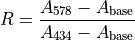

Discrete pH Analyses (Total Scale)¶
- PI
Dr. Andrew Dickson
- Technicians
Manuel Belmonte
Kayleen Fulton
Sampling¶
Samples were collected in 250 mL Pyrex glass bottles and sealed using grey butyl rubber stoppers held in place by aluminum-crimped caps. Each bottle was rinsed two times and allowed to overflow by one half additional bottle volume. Prior to sealing, each sample was given a 1% headspace and poisoned with 0.02% of the sample volume of saturated mercuric chloride (HgCl2). Samples were collected only from Niskin bottles that were also being sampled for both total alkalinity and dissolved inorganic carbon in order to completely characterize the carbon system. Additionally, duplicate samples were collected from all stations for quality control purposes.
Analysis¶
pH was measured spectrophotometrically on the total hydrogen scale using an Agilent 8453 spectrophotometer and in accordance with the methods outlined by Carter et al., 2013. [Carter2013]. A Kloehn V6 syringe pump was used to autonomously fill, mix, and dispense sample through the custom 10cm flow-through jacketed cell. A Thermo Fisher Isotemp recirculating water bath was used to maintain the cell temperature at 25.0°C during analyses, and a YSI 4600 precision thermometer and probe were used to monitor and record the temperature of each sample during the spectrophotometric measurements. Purified meta-cresol purple (mCP) was the indicator used to measure the absorbance of light measured at two different wavelengths (434 nm, 578 nm) corresponding to the maximum absorbance peaks for the acidic and basic forms of the indicator dye. A baseline absorbance was also measured and subtracted from these wavelengths. The baseline absorbance was determined by averaging the absorbances from 725-735nm. The ratio of the absorbances was then used to calculate pH on the total scale using the equations outlined in Liu et al., 2011 [Liu2011]. The salinity data used was obtained from the salinity analysis conducted on board.
Reagents¶
The mCP indicator dye was made up to a concentration of approximately 2.0mM and a total ionic strength of 0.7 M. A total of two batches were used during I06S. The pHs of these batches were adjusted with 0.1 mol kg-1 solutions of HCl and NaOH (in 0.6 mol kg-1 NaCl background) to approximately 7.7, measured with a pH meter calibrated with NBS buffers. The indicator was obtained from Dr. Robert Byrne at the University of Southern Florida and was purified using the flash chromatography technique described by Patsavas et al., 2013. [Patsavas2013].
Data Processing¶
An indicator dye is itself an acid-base system that can change the pH of the seawater to which it is added. Therefore it is important to estimate and correct for this perturbation to the seawater’s pH for each batch of dye used during the cruise. To determine this correction, multiple bottles from each station were measured twice, once with a single addition of indicator dye and once with a double addition of indicator dye. The measured absorbance ratio (R) and an isosbestic absorbance () were determined for each measurement, where:

and
The change in R for a given change in , , was then plotted against the measured R-value for the normal amount of dye and fitted with a linear regression. From this fit the slope and y-intercept (b and a respectively) are determined by:

From this the corrected ratio () corresponding to the measured absorbance ratio if no indicator dye were present can be determined by:
Problems and Troubleshooting¶
Throughout the course of the cruise the pH spectrophotometric system performed optimally. After a bad weather break and upon start up of the system the operator noticed the system’s inability to yield repeatable values for the same sea water source. The lead technician was able to diagnose that the tungsten and deutrium bulbs in the Agilent 8453 spectophotometer had burned out and a quick replacement of these bulbs solved this issue without affecting any sample measurements.
Standardization/Results¶
The precision of the data was assessed from measurements of duplicate analyses, replicate analyses (two successive measurements on one bottle), and certified reference material (CRM) Batch 180 (provided by Dr. Andrew Dickson, UCSD). Three or four duplicates and one or two replicate measurements were performed on every station when at least twenty-four Niskins were sampled. If less than twenty-four Niskins were sampled, only two or three duplicates and one replicate measurement were performed. CRMs were measured at the beginning and ending of each day.
The precision statistics for I06S are:
Duplicate precision |
± 0.0099 (n=97) |
Replicate precision |
± 0.0005 (n=49) |
B180 |
7.8828 ± 0.0017 (n=56) |
B180 within-bottle SD |
± 0.0007 (n=56) |
1449 pH values were submitted for I06S. Additional corrections will need to be performed and these data should be considered preliminary until a more thorough analysis of the data can take place on shore.
- Carter2013
Carter, B.R., Radich, J.A., Doyle, H.L., and Dickson, A.G., “An Automated Spectrometric System for Discrete and Underway Seawater pH Measurements,” Limnology and Oceanography: Methods, 2013.
- Liu2011
Liu, X., Patsavas, M.C., Byrne R.H., “Purification and Characterization of meta Cresol Purple for Spectrophotometric Seawater pH Measurements,” Environmental Science and Technology, 2011.
- Patsavas2013
Patsavas, M.C., Byrne, R.H., and Liu X. “Purification of meta-cresol purple and cresol red by flash chromatography: Procedures for ensuring accurate spectrophotometric seawater pH measurements,” Marine Chemistry, 2013.